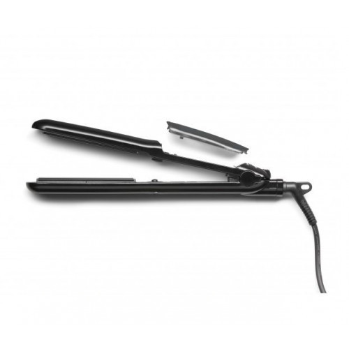

PLAUKŲ TIESINTUVAI virš 170 modelių Žema kaina | Varle.lt
 Pristatymas Apmokėjimas Informacija Grąžinimas ir garantijos Apie varle.lt DUK Rekvizitai Karjera Susisiekite +370 670 95555 arba palikite pranešimą Verslui KontaktaiKai reikia kainos ir patarimo!
Prisijungti
0Patikusios prekės
0Krepšelis
VISOS PREKĖS Mobilieji telefonai, foto ir video Mobilieji telefonai Apple Xiaomi Samsung Huawei OnePlus CAT SONY Daugiau... Dėklai ir laikikliai Asmenukių lazdos, Selfie sticks Planšetinių kompiuterių dėklai Planšečių ir telefonų laikikliai Telefonų dėklai Telefonų korpusai APPLE SHOP MI SHOP SAMSUNG SHOP Fototechnika Skaitmeniniai fotoaparatai Veidrodiniai fotoaparatai Sisteminiai fotoaparatai Momentiniai fotoaparatai Lomo fotoaparatai Foto albumai Foto popierius Atminties kortelės Fototechnikos priedai Nuotraukų rėmeliai Daugiau... Teleskopai, mikroskopai, žiūronai Teleskopai Mikroskopai Žiūronai Monokliai Didinamieji stiklai Teleskopų ir mikroskopų priedai Daugiau... Vaizdo kameros ir priedai 360 kameros Veiksmo kameros ir GoPro kameros Studijos monitoriai Vaizdo juostos Vaizdo kamerų priedai Daugiau... GPS Navigacija Automobilių navigaciniai imtuvai Jūriniai navigaciniai imtuvai, echolotai Nešiojami navigaciniai imtuvai Aviaciniai navigaciniai imtuvai GPS priedai Kita įranga Laisvų rankų įranga Radijo ryšio įranga Dronai Stacionarūs telefonai Priedai ir aksesuarai Apsauginės plėvelės ir stiklai telefonams, planšetėms Atminties kortelės Automobiliniai telefonų krovikliai Baterijos (Standartinės) Universalūs baterijų įkrovikliai Baterijos ir įkrovikliai (Telefonams, planšetėms) Nešiojami įkrovikliai (Power bank) Skaitmeniniai pieštukai ekranams Telefonų linzės Daugiau... Išmanieji laikrodžiai, apyrankės ir priedai Išmanieji laikrodžiai, apyrankės Priedai išmaniems laikrodžiams Kompiuterinė technika Nešiojami kompiuteriai ir priedai Nešiojami kompiuteriai Išoriniai kietieji diskai (HDD) Docking stations Nešiojamų kompiuterių atmintys (RAM) Nešiojamų kompiuterių įkrovikliai Nešiojamų kompiuterių baterijos Nešiojami aušintuvai stovai ir laikikliai Kompiuterių apsauginiai užraktai, troseliai Planšetiniai kompiuteriai ir priedai Planšetiniai kompiuteriai Planšetinių kompiuterių dėklai E-Skaityklės (eBook) Grafinės planšetės Stacionarūs kompiuteriai Žaidimų kompiuteriai Powered by Asus Mini kompiuteriai (Sticks, NUC) Atnaujinti stacionarūs kompiuteriai Monitoriai Projektoriai eSporto ir žaidimų (gaming) įranga Išoriniai įrenginiai Pelės Klaviatūros Ausinės Garso kolonėlės Pelių kilimėliai Konsolės, žaidimai ir priedai Žaidimų konsolės Kompiuteriniai žaidimai Nintendo Switch Žaidimų kėdės Virtuali realybė (VR) Spausdintuvai ir skeneriai Spausdintuvai Skeneriai 3D spausdintuvai Dokumentų naikintuvai Tinklo įranga Tinklo plokštės, adapteriai, kontroleriai Maršrutizatoriai (Router) Šakotuvai (Switch) Vaizdo įrašymo įranga Tinklo kameros ir monitoringas Išmanieji namai Serveriai ir duomenų saugyklos Grafinės planšetės Stacionarių kompiuterių komponentai Pagrindinės plokštės Procesoriai Kompiuterių atmintys (RAM) Kietieji diskai / SSD Išoriniai kietieji diskai Vaizdo plokštės Korpusai kompiuteriams Maitinimo blokai Programinė įranga Antivirusai Operacinės sistemos Kabeliai, laidai ir adapteriai USB kabeliai Adapteriai Tinklo kabeliai (UTP, DSL, Fiber) Audio/Video kabeliai Elektros maitinimo kabeliai (ilgintuvai) Buitinė technika ir elektronika Televizoriai Garso ir vaizdo technika Namų kino sistemos TV imtuvai (priedėliai dvb-t dvb-c dvb-s) Projektoriai Muzikos instrumentai ir priedai Kolonėlės, akustinės sistemos Muzikiniai centrai Magnetolos, Radijo grotuvai Automagnetolos Daugiau... Skalbimo mašinos Skalbinių džiovyklės Stambi virtuvės technika Orkaitės Kaitlentės Viryklės Mikrobangų krosnelės Indaplovės Šaldytuvai Dviduriai šaldytuvai Vyno šaldytuvai Automobiliniai šaldytuvai Šaldikliai, šaldymo dėžės Gartraukiai Daugiau... Smulki virtuvės technika Daugiafunkciniai puodai Kavos aparatai Garų puodai Kokteilių plaktuvai Plakikliai (mikseriai) Trintuvai (blenderiai) Pieno plakikliai Gruzdintuvės Skrudintuvai Virtuviniai kombainai Vakuumatoriai ir priedai Mini viryklės Sulčiaspaudės Virduliai Vaflinės Elektriniai griliai ir kepsninės Lauko griliai ir kepsninės Sumuštinių keptuvai Kavamalės Mėsmalės Virtuvinės svarstyklės Daugiau... Namų technika Pūkų surinktuvai Apmėtymo mašinos (overlokai) Siuvimo mašinos Garais valantys prietaisai Dulkių siurbliai Langų valytuvai Lyginimo įranga Vonios svarstyklės Dulkių siurblių filtrai ir maišeliai Daugiau... Oro reguliavimas Šilumos siurbliai Jura Grožis ir sveikata Plaukų džiovintuvai Plaukų formavimo šukos Plaukų tiesintuvai Žnyplės plaukams Barzdaskutės Plaukų kirpimo mašinėlės Kirpimo mašinėlės nosies plaukams Veido ir kūno šveitikliai Epiliatoriai Fotoepiliatoriai Plaukų formavimo įrankiai, priedai Kosmetiniai veidrodžiai Manikiūro prietaisai Masažuokliai Pėdų masažuokliai Šildyklės Dantų šepetėliai ir irigatoriai Daugiau... Signalizacijos, apsaugos sistemos ir davikliai Kvepalai, kosmetika Kvepalai Kvepalai moterims Kvepalai vyrams Kvepalai vaikams Kvepalų rinkiniai Feromoniniai kvepalai Kvapai namams Loreal Burnos higienai Saulės kosmetika Kosmetinės Plaukų priežiūrai ir modeliavimui Plaukų priežiūra Plaukų modeliavimas Plaukų dažymas, šviesinimas Dekoratyvinė kosmetika Priemonės veidui Priemonės lūpoms Priemonės akims Priemonės nagams Daugiau... Kūno priežiūrai Losjonas kūnui Gelis kūnui (želė) Dezodorantas kūnui Aliejus kūnui (masažui) Kremas kūnui Muilas kūnui Skutimosi priemonės Daugiau... Asmeninei higienai Prausimosi reikmenys Veido priežiūrai Veido kremai Kaukės veido odai Paakių kremai Pieneliai veidui Prausikliai veidui Serumai veidui Makiažo valikliai Daugiau... Tualetinis popierius ir servetėlės Depiliacijos priemonės Sodo prekės, įrankiai Šiltnamiai Vejapjovės (Žoliapjovės) Vejos robotai Krūmapjovės (Trimeriai) Kultivatoriai Vejos aeratoriai, skarifikatoriai Gyvatvorių žirklės Grandininiai pjūklai Vejos traktoriai Trašų, sėklų barstytuvai Karučiai ir vežimėliai Trąšos ir augalų priežiūra Pneumatinė įranga Pneumatiniai suktuvai ir gręžtuvai Pneumatiniai šlifuokliai Pneumatiniai kniedikliai ir viniakalės Pneumatiniai nupūtikliai Pneumatiniai pulverizatoriai Greitos jungtys Metalo detektoriai Lauko baldai Elektriniai įrankiai Elektriniai gręžtuvai, suktuvai Smūginiai veržliasukiai Elektriniai pjūklai Elektrinės frezos Obliavimo staklės, obliai Elektriniai staliniai galąstuvai Orapūtės, karšto oro fenai Daugiau... Akumuliatoriniai įrankiai Akumuliatoriniai gręžtuvai, perforatoriai Akumuliatoriniai gręžtuvai, suktuvai Akumuliatoriniai veržliasukiai Akumuliatoriniai pjūklai Akumuliatoriniai obliai Daugiau... Vazonai ir daigyklos Stovai augalams Valymo, plovimo įranga Aukšto slėgio plovyklos Aukšto slėgio plovyklų priedai Grindų priežiūros įranga Daugiau... Medžio apdirbimo įranga Santechniniai įrankiai Plytelių pjaustyklės Kopėčios, pastoliai Darbastaliai Sniego valytuvai Tvoros ir vartai sodui Darbo rūbai Avalynė darbui Darbinės ausinės Darbiniai akiniai Darbinės pirštinės Darbo saugos ženklai ir priedai Daugiau... Sodo technikos priedai Priekabos ir puspriekabės Grandinės ir lynai Grandininiams pjūklams Priedai trimeriams, žoliapjovėms Priedai sodo traktoriams Kultivatoriams Daugiau... Įrankių priedai Abrazyvai Sukimo raktų galvutės Grąžtai Gręžimo karūnos Įrankių dėžės, vežimėliai Daugiau... Statybinės medžiagos ir priedai Kenkėjų kontrolė Baldai ir namų interjeras Miegamojo baldai Miegamojo lovos Miegamojo komodos Pakabinamos miegamojo lentynėlės Miegamojo spintos Miegamojo staliukai Miegamojo spintelės Daugiau... Pakabinamos lentynos Gėrimų spintelės ir laikikliai Interjero detalės ir aksesuarai Užuolaidos Žaliuzės ir roletai Markizės Žvakės ir žvakidės Kvapai namams Parketlentės Daugiau... Lauko baldai Lauko baldų komplektai Hamakai Lauko skėčiai Gultai Lauko kėdės ir foteliai Lauko stalai Lauko lovos Lauko suolai ir suoliukai Lauko supynės Vaikiški lauko baldai Smėlio dėžės Pavėsinės ir tentai Lauko pertvaros Įvairūs lauko baldai Daugiau... Patalynė Minkšti baldai Sėdmaišiai Foteliai Pufai Sofos Daugiau... Svetainės baldai TV staliukai Svetainės komodos Svetainės spintos Svetainės vitrinos Svetainės lentynos Svetainės sekcijos Daugiau... Čiužiniai ir grotelės Čiužiniai Lovų grotelės Širmos ir pertvaros kambariui Prieškambario baldai Prieškambario komodos Pakabinamos prieškambario lentynėlės Prieškambario lentynos Prieškambario spintelės Prieškambario spintos Daugiau... Virtuvės baldai Virtuvės stalai Virtuvės spintelės Virtuviniai kampai Vitrinos Barai Stalviršiai Daugiau... Vonios baldai Vonios komplektai Praustuvų spintelės Vonios spintelės Kėdės, krėslai, minkštasuoliai Vaikų baldai Vaikų kambario lovos Vaikų kambario sekcijos Vaikų kambario lentynos Vaikų kambario spintos Vaikų kambario lentynėlės Vaikų kambario staliukai Vaikų kambario komodos Vaikų kambario stalai Vaikų kambario spintelės Vaikų kambario vitrinos Daugiau... Biuro baldai Žurnaliniai staliukai Darbo stalai Biuro lentynos Biuro spintelės Biuro spintos Biuro komodos Daugiau... Užvalkalai baldams Sportas, laisvalaikis, turizmas Aktyvus sportas ir poilsis gryname ore Dviračiai Dviratukai vaikams Batutai Riedučiai Riedžiai Paspirtukai Elektriniai paspirtukai Vaikščiojimo lazdos Riedlentės Kamuoliai Pompos Dviračių priedai ir aksesuarai Paspirtukų priedai ir aksesuarai Žaidimų aikštelės, supynės Metalo detektoriai Golfo inventorius Daugiau... Lauko tenisas Treniruokliai ir priedai sportui Sporto inventorius Hanteliai ir svoriai Elipsiniai treniruokliai Dviračiai treniruokliai Bėgimo takeliai Daugiafunkciniai treniruokliai Sporto priedai treniruotėms Daugiau... Gimnastika, aerobika, joga Smiginiai Apranga ir apsaugos sportui Papildai sportui Vandens sportas ir pramogos Baseinai Plaukimo kepuraitės Nardymo kaukės ir vamzdeliai Plaukimo akiniai Plaukmenys (ląstai) Plaukimo rankovės Plaukimo aksesuarai Gelbėjimosi liemenės ir ratai Plaukimo kostiumai Vandens batai Pripučiami čiužiniai Plaukimo lentos ir plūdurai Irklentės Vandens slidės Kajakai Vandens aerobikos prekės Daugiau... Turizmas Hamakai Miegmaišiai Palapinės Turistinės kuprinės Lauko skėčiai ir tentai Lauko griliai ir kepsninės Stovyklavimo žibintai, šviestuvai Turistiniai indai Turistiniai valgymo įrankiai Apsaugos nuo vabzdžių Daugiau... Žūklės reikmenys Valtys Kėdės ir krėslai žvejybai Meškerės žvejybai Graibštai ir kabliai žvejybai Magnetai paieškai Daugiau... Vaikui ir mamai, žaislai Žaislai LEGO® Konstruktoriai Robotai, išmanūs žaislai Radijo bangomis valdomi žaislai Edukaciniai žaislai Muzikiniai žaislai Kūrybiniai žaislai Modeliukai Trasos ir racing mašinėlės Dėlionės Stalo žaidimai Smėlio žaislai Vandens žaislai Pripučiami vandens žaislai Paplūdimio mėtymo diskai Figūrėlės Mediniai žaislai Barškučiai ir kramtukai Vilkeliai Daugiau... Vežimėliai vaikams Automobilinės kėdutės Vaikiški dviračiai Vaikštynės-stumdukai Vaikų ir kūdikių maitinimui Gertuvės ir puodeliai vaikams Indeliai ir lėkštutės vaikams Žindukai ir kramtukai Kūdikių buteliukai ir buteliukų šildytuvai Maitinimo pagalvės Seilinukai Maitinimo kėdutės Kūdikių nešioklės Vaikų ir kūdikių priežiūrai Mobilios auklės Sauskelnės kūdikiams Kūdikio higienai Vystymo lentos ir vystyklai Naktipuodžiai Kūdikių vonelės Kūdikių ir vaikų saugumui Prekės mamoms Pientraukiai Įklotai ir paklotai Patalynė kūdikiui Drabužėliai vaikams ir kūdikiams Laipteliai vaikams Gultukai vaikui Šildyklės Įvairūs aksesuarai vaikui Įvairios prekės vaikams ir tėvams Apranga, avalynė, aksesuarai Laikrodžiai Vyriški Moteriški Daugiau... Avalynė, kedai, šlepetės Avalynė vyrams Avalynė moterims Avalynė vaikams Šlepetės Baseino ir paplūdimio šlepetės Avalynė darbui Daugiau... Rankinės Moteriškos rankinės Vyriškos rankinės Daugiau... Papuošalai Darbo rūbai Apranga moterims Striukės moterims Liemenės moterims Švarkeliai moterims Marškinėliai moterims Sijonai moterims Suknelės moterims Apatinis trikotažas moterims Maudymosi kostiumėliai Daugiau... Piniginės Moteriškos piniginės Vyriškos piniginės Dėklai Dokumentams Raktinės Vizitinėms kortelėms Apranga vyrams Striukės vyrams Švarkai vyrams Marškiniai vyrams Marškinėliai vyrams Kelnės vyrams Šortai vyrams Apatinis trikotažas vyrams Paplūdimio apranga vyrams Daugiau... Pirštinės Vyriškos pirštinės Moteriškos pirštinės Daugiau... Skėčiai Diržai Apranga vaikams Striukės vaikams Džemperiai vaikams Marškinėliai vaikams Kelnės vaikams Šortai vaikams Apatinis trikotažas vaikams Paplūdimio apranga vaikams Daugiau... Kepurės Šalikai, skraistės Sportiniai krepšiai Kuprinės Lagaminai ir kelioniniai krepšiai Bagažo svarstyklės Santechnika, šildymas Vonios ir jų priedai Vonios ir apdaila Dušo kabinos ir apdaila Dušo stovai, masažinės sienelės Maišytuvai Praustuvai Plautuvės Klozetai, pisuarai Sifonai Dušo latakai ir trapai Nerūdijančio plieno žarnelės WC rėmai Santechnikos aksesuarai Vonios ir tualeto aksesuarai Tualetinio popieriaus laikikliai Rankšluosčių džiovintuvai, gyvatukai, kopėtėlės Vonios užuolaidos ir kilimėliai Klozetų dangčiai Šildymo prietaisai Radiatoriai Vandens šildytuvai Išplėtimo indai Šildymo katilai Grindų šildymas Krosnelės ir židiniai Priedai krosnelėms ir židiniams Kaminai, dūmtraukiai ir įdėklai Santechninė šildymo armatūra Atsarginės dalys santechnikai Ketiniai, fitingai Sklendės ir vožtuvai Vandens filtravimo sistemos Tvirtinimo detalės ir laikikliai Vandens skaitikliai Kitos dalys santechnikai Kondicionavimo ir vėdinimo įrangai Ventiliacija Automobilių prekės Automobiliniai kilimėliai Audi kilimėliai BMW kilimėliai Mercedes Benz kilimėliai Toyota kilimėliai Volkswagen kilimėliai Volvo kilimėliai Daugiau... Automobiliniai sėdynių užvalkalai Audi sėdynių užvalkalai BMW sėdynių užvalkalai Mercedes Benz sėdynių užvalkalai Toyota sėdynių užvalkalai Volkswagen sėdynių užvalkalai Volvo sėdynių užvalkalai Daugiau... Elektromobilių įkrovimo įranga Nano danga Padangos ir priedai Padangos automobiliams Padangos motociklams Sniego grandinės Alkotesteriai Automagnetolos FM moduliatoriai GPS imtuvai Vaizdo registratoriai Parkavimo sistemos Valytuvai automobiliams Automobilių apsaugos priemonės Saugos ženklai ir iškabos Akumuliatoriai ir priedai Automobiliniai akumuliatoriai Moto akumuliatoriai Akumuliatorių įkrovikliai Akumuliatorių priežiūros prekės Užvedimo laidai Diagnostikos įranga automobiliams Inverteriai Alyva, tepalai Motociklo priežiūrai Priedai automobiliams Auto kabliai Specialūs įrankiai Įvairios staklės Auto darbastaliai Auto įvairūs Autochemija Autokosmetika Auto lemputės Keltuvai ir pakėlėjai Prekės gyvūnams Šunims Sausas maistas šunims Šlapias maistas, konservai šunims Skanėstai šunims Žaislai šunims Dubenėliai ir girdyklos šunims Higienos priemonės šunims Vitaminai ir papildai šunims Priežiūros priemonės šunims Pavadėliai šunims Petnešos šunims Antkakliai šunims Antsnukiai šunims Drabužiai šunims Guoliai ir patiesalai šunims Narvai Būdos ir Voljerai šunims Baseinai šunims Daugiau... Katėms Sausas maistas katėms Šlapias maistas, konservai katėms Skanėstai katėms Žaislai katėms Dubenėliai ir girdyklos katėms Higienos priemonės katėms Vitaminai ir papildai katėms Priežiūros priemonės katėms Pavadėliai, antkakliai, petnešos katėms Kraikas katėms Tualetai ir semtuvėliai katėms Draskyklės ir stovai katėms Guoliai ir patiesalai katėms Transportavimo narvai ir krepšiai katėms Daugiau... Žuvims Maistas žuvims Filtravimo įranga akvariumams Filtravimo medžiagos akvariumams Apšvietimas akvariumams Šildytuvai ir kondicionieriai akvariumams Siurbliai ir pompos akvariumams Oro kompresoriai ir priedai akvariumams CO2 sistemos akvariumams Dekoracijos, augalai ir gruntas akvariumams Tvenkiniams Akvariumų spintelės Daugiau... Graužikams Maistas graužikams Nameliai ir narvai graužikams Įranga ir priedai graužikams Paukščiams Lesalas paukščiams Inkilai paukščiams Įranga ir priedai paukščiams Papuošalai gyvūnams Aromaterapija Landos į duris gyvūnams Bevielės nematomos tvoros gyvūnams Pirmoji pagalba augintiniams Įvairios prekės gyvūnams Knygos, biuro prekės Brūkšninių kodų skaitytuvai Pinigų tikrinimo aparatai Pinigų skaičiuokliai ir rūšiuokliai Etikečių ir lipdukų spausdintuvai Laminatoriai Įrišimo aparatai Skylamušiai ir įspaudai Įvairios biuro prekės Popieriaus pjaustykles Dokumentų naikintuvai Popierius Kalkuliatoriai Antspaudai Segikliai ir išsegikliai Segtuvai ir įmautės Dėklai ir aplankai Archyvavimo dėžės Užrašų knygutės ir sąsiuviniai Penalai ir pieštukinės Rašikliai Flomasteriai Klijai popieriui Lipdukai Lipnios etiketės ir juostelės Magnetukai Archyvavimo priedai Kalendoriai Mobilūs reklaminiai stendai Prezentacinės lentos Seifai Knygos Psichologija Švietimas ir ugdymas Enciklopedijos ir žodynai Mokomoji literatūra Biografijos Turizmas Pratybos Menas Vaikų ir jaunimo literatūra Memuarai Maisto prekės Pieno produktai Duonos gaminiai Kruopos dribsniai ir košės Saldumynai Padažai ir majonezai Traškučiai ir užkandžiai Miltai Šaldytas maistas Margarinas ir riebalai Gėrimai Įvairios Aibė prekės Maisto papildai ir mineralai Daržovės ir grybai Mėsa ir mėsos produktai Konservuotas maistas Riešutai ir džiovinti vaisiai Prieskoniai ir kepimo priedai Aliejus ir actas Kava, kakava ir arbata Vaisiai ir uogos Žuvis ir jūros gėrybės Kiaušiniai Sausainiai ir konditerija Dovanos, šventinė atributika Dovanos pagal gavėją Dovanos mamai Dovanos tėčiui Dovanos vaikams Dovanos moterims Dovanos vyrams Dovanos JAI Dovanos JAM Originalios dovanos Dovanų kuponai Medaliai ir monetos Nutrinami žemėlapiai Kūrybinės dovanos Šventinė atributika Fejerverkai (saliutai) Kalėdinės eglutės Kalėdiniai lauko lazeriai Kalėdinės girliandos 3D vaizdo hologramos Dovanų dėžutės, maišeliai Sveikinimų atvirutės Šventiniai kostiumai Kiti šventiniai papuošimai Sirgalių atributika Vėliavos ir priedai Proginės dovanos Valentino dienos dovanos Dovanos po eglute Gimtadienio dovanos Dovanos mergvakariui Dovanos bernvakariui Įkurtuvių dovanos Krikštynų dovanos Dovanų dėžutės, maišeliai Dovanos pagal tipą Marškinėliai Džemperiai Smėlinukai Fotodovanos Pagalvių užvalkalai Puodeliai su užrašais Originalūs puodeliai Bokalai ir stikliukai Originalios gertuvės Vakarėliams ir šventėms Vyno reikmenys Taupyklės Emocijos Raktų pakabukai Simpsonų suvenyrai Linksmosios prijuostės Zippo žiebtuvėliai Medinės dovanos Knygų skirtukai Vaistinė Deguonies kameros Masažo stalai ir krėslai Moterų sveikatos priemonės Vyrų sveikatos priemonės Maisto papildai ir mineralai Pirmoji pagalba Aromatiniai - eterinai aliejai Stetofonendoskopai Medicininiai simuliatoriai Anatominiai modeliai Tikslieji mokslai Reabilitacinės priemonės Mamoms ir vaikams Ortopedija Daugiau... Sekso ir erotinės prekės SEKSO PREKĖS MOTERIMS Vaginaliniai kamuoliukai Moteriškos pompos Masturbatoriai vaginoms Pripučiamos lėlės Sekso prekės Vyrams Masturbuokliai Penio žiedai Pripučiamos sekso lėlės Penio pompos Lubrikantai, aliejai ir kt. Lubrikantai Oraliniai lubrikantai Masažo aliejai Analiniai lubrikantai Vibratoriai Tradiciniai vibratoriai Mini vibratoriai Vibratoriai kiškučiai G - taško vibratoriai Analinio sekso prekės Analiniai kaiščiai ir falai Analiniai vibratoriai Analiniai kamuoliukai Rinkiniai Erotinis apatinis trikotažas Seksualios kojinės Seksualios kelnaitės Seksualūs kostiumai Seksualūs korsetai Erotiniai suvenyrai ir žaidimai Erotiniai suvenyrai Erotiniai žaidimai Įvairios sekso prekės Daugiau... Kūryba ir rankdarbiai Rinkiniai siuvinėjimui Siuvimo ir audimo priedai Deimantinės mozaikos, dėlionės Tapyba pagal skaičius ir spalvas Siuvimo audiniai Biserio karoliukai vėrimui Siūlai mezgimui, nėrimui, siuvinėjimui Aksesuarai rankdarbiams Vakuuminės kameros Slėgio bakai Molbertai Drobės Teptukai tapybai Modeliniai dažai Buities, virtuvės, apyvokos prekės Patalynė Patalynės komplektai Pagalvės Antklodės Paklodės Daugiau... Rankšluosčiai Rankšluosčiai vaikams Virtuvės reikmenys Lauko katilai Puodai Keptuvės Dangčiai puodams ir keptuvėms Indai, lėkštės, servizai Taurės, puodeliai Arbatinukai, kavinukai Virtuvės ir stalo įrankiai Priedai kepsninėms ir griliams Trintuvės ir tarkos Staltiesės, virtuviniai rankšluosčiai Termo puodeliai Termosai Kepimo popierius, formos, indai Prieskoninės Virtuviniai padėklai Vienkartiniai, teminiai indai Vandens staliniai filtrai Maisto saugojimo, konservavimo indai Prieskoniai ir padažai Namų apyvokos prekės Šiukšliadėžės Šluotos ir šepečiai valymui Šluostės ir kempinėlės valymui Valikliai ir plovikliai Vežimėliai ir kibirai valymui Lempos ir apšvietimas Lempos, lemputės Stalo šviestuvai Pakabinami šviestuvai Lubiniai šviestuvai Sieniniai šviestuvai Vaikiški šviestuvai, projektoriai Kalėdinės girliandos Įmontuojami šviestuvai, LED panelės LED šviesos juostos, profiliai Prožektoriai ant galvos Pramoninis apšvietimas Pastatomi šviestuvai Lauko šviestuvai Kalėdiniai lauko lazeriai Prožektoriai, žibintai Daugiau... Pirtys ir priedai Kubilai pirtims Kvapai pirtims Akmenys pirtims Pirties baldai Lauko pirtys Pirtys kabinos Krosnelės pirtims Valdymas ir apsaugos pirtims Garo generatoriai ir dalys ▿ Rodyti daugiau kategorijų Išpardavimas Akcijos Atnaujintos prekės Patarimai Prekybos centras Rikiavimas Pigiausi viršuje Brangiausi viršuje Daugiausiai vertinti Didžiausia nuolaida Buitinė technika ir elektronika Grožis ir sveikataPlaukų tiesintuvai
(176) Mes turime plaukų tiesintuvų tokių gamintojų kaip REMINGTON, BABYLISS, OSOM PROFESSIONAL, PHILIPS ir kitų. Kainos nuo 9.99Eur. Naudokite aukščiau esančius filtrus pagal speciali kainą, kainą, gamintoją, tipą, galingumą (w), paviršiaus dangą, įšilimo laiką (sek), maksimali temperatūrą (°c), jonizavimo funkciją, apsaugą nuo perkaitimo, reguliuojamą temperatūrą, laido ilgį (m), pardavėją. Rodyti daugiau BaBylissPRO Babysleek Mini Pro plaukų tiesinimo žnyplės BAB2050E 1 vnt. 28, 32 €- 8 % 25, 97 € 1-2 d. d. (3) Gamintojas: BaByliss Galingumas (W): 20 Paviršiaus danga: Keramika Maksimali temperatūra (°C): 200 Laido ilgis (m): 1.8 Spalva: Balta, Juoda BABYLISS Hair straightener ST387E Pro 235 Intense Protect Ceramic heating system, 52, 99 € 4-7 d. d. (98) Gamintojas: BaByliss Paviršiaus danga: Keramika Maksimali temperatūra (°C): 235 Jonizavimo funkcija: Taip Automatinis išsijungimas: Taip Apsauga nuo perkaitimo: Taip Reguliuojama temperatūra: Taip Spalva: Pilka, Juoda Tiesinimo žnyplės for hair REMINGTON S9600 (46W, red color) 38, 99 €
- 13 % 33, 89 € 5-8 d. d. (65) Gamintojas: Remington Galingumas (W): 46 Paviršiaus danga: Keramika Įšilimo laikas (sek): 10 Maksimali temperatūra (°C): 235 Automatinis išsijungimas: Taip Reguliuojama temperatūra: Taip Laido ilgis (m): 3 REMINGTON S8500 Plaukų Tiesinimo Žnyplės 36, 99 €
- 18 % 30, 21 € 4-7 d. d. (25) Gamintojas: Remington Galingumas (W): 50 Paviršiaus danga: Keramika Įšilimo laikas (sek): 15 Maksimali temperatūra (°C): 230 Automatinis išsijungimas: Taip Apsauga nuo perkaitimo: Taip Reguliuojama temperatūra: Taip Tiesinimo žnyplės / Philips StraightCare BHS674/00 / 38, 99 €
- 11 % 34, 66 € 4-7 d. d. (36) Gamintojas: Philips Paviršiaus danga: Keramika Įšilimo laikas (sek): 30 Maksimali temperatūra (°C): 220 Jonizavimo funkcija: Taip Automatinis išsijungimas: Taip Reguliuojama temperatūra: Taip Laido ilgis (m): 1.8 Plaukų tiesinimo žnyplės Remington S6500 33, 99 €
- 23 % 26, 10 € 4-7 d. d. (18) Gamintojas: Remington Paviršiaus danga: Keramika Įšilimo laikas (sek): 15 Maksimali temperatūra (°C): 230 Automatinis išsijungimas: Taip Reguliuojama temperatūra: Taip Laido ilgis (m): 3 Spalva: Ruda, Juoda Plaukų tiesinimo ir garbanojimo žnyplės BaByliss ST330E 36, 99 €
- 18 % 30, 21 € 4-7 d. d. (34) Gamintojas: BaByliss Galingumas (W): 28 Paviršiaus danga: Keramika Maksimali temperatūra (°C): 235 Automatinis išsijungimas: Taip Reguliuojama temperatūra: Taip Spalva: Juoda REMINGTON S8540 Hair Tiesinimo žnyplės Remington S8540 Keratin Protect 41, 99 €
- 18 % 34, 23 € 4-7 d. d. (21) Gamintojas: Remington Galingumas (W): 50 Paviršiaus danga: Keramika Įšilimo laikas (sek): 15 Maksimali temperatūra (°C): 230 Automatinis išsijungimas: Taip Reguliuojama temperatūra: Taip Laido ilgis (m): 1.8 Plaukų žnyplės apimčiai Mini Volume Iron 16, 50 € 1-3 d. d. (31) Osom Professional Plaukų tiesintuvas infraredas OSOMV189ST 99, 89 € 2-5 d. d. (19) Gamintojas: Osom Professional Plaukų tiesinimo žnyplės REMINGTON S6505 47, 99 €
- 23 % 36, 99 € 4-7 d. d. (15) Gamintojas: Remington Spalva: Juoda Plaukų tiesintuvas BaByliss ST395E 89, 99 €
- 22 % 69, 99 € 4-7 d. d. (17) Gamintojas: BaByliss Paviršiaus danga: Keramika Maksimali temperatūra (°C): 230 Jonizavimo funkcija: Taip Automatinis išsijungimas: Taip Reguliuojama temperatūra: Taip Spalva: Violetinė REMINGTON S7710 Remington Hair Tiesinimo žnyplės REMINGTON - S7710 Pro Ion 42, 99 €
- 2 % 41, 99 € 5-8 d. d. (31) Gamintojas: Remington Galingumas (W): 50 Paviršiaus danga: Keramika Įšilimo laikas (sek): 15 Maksimali temperatūra (°C): 230 Jonizavimo funkcija: Taip Automatinis išsijungimas: Taip Reguliuojama temperatūra: Taip Plaukų tiesinimo žnyplės Esperanza EBP001 10, 99 € 5-8 d. d. (11) Gamintojas: Esperanza Galingumas (W): 35 Paviršiaus danga: Keramika Maksimali temperatūra (°C): 200 Spalva: Juoda Plaukų tiesintuvas REMINGTON S3500 30, 99 €
- 6 % 28, 99 € 5-8 d. d. (19) Gamintojas: Remington Paviršiaus danga: Keramika, Turmalinas Įšilimo laikas (sek): 15 Maksimali temperatūra (°C): 230 Automatinis išsijungimas: Taip Reguliuojama temperatūra: Taip Laido ilgis (m): 1.8 Spalva: Juoda Beurer Plaukų tiesinimo žnyplės HS80 47, 99 € 2-4 d. d. (8) Gamintojas: Beurer Paviršiaus danga: Titanas Jonizavimo funkcija: Taip Apsauga nuo perkaitimo: Taip Reguliuojama temperatūra: Taip Plaukų tiesintuvas PHILIPS HPS 930/00 72, 99 €
- 9 % 66, 28 € 2-4 d. d. (8) Gamintojas: Philips Įšilimo laikas (sek): 10 Maksimali temperatūra (°C): 230 Jonizavimo funkcija: Taip Reguliuojama temperatūra: Taip Laido ilgis (m): 2.5 Spalva: Juoda Galiukų tiesinimo žnyplės Philips StraightCare BHS677/00 55, 99 €
- 13 % 48, 89 € 1-3 d. d. (9) Gamintojas: Philips Paviršiaus danga: Keramika Įšilimo laikas (sek): 15 Maksimali temperatūra (°C): 230 Jonizavimo funkcija: Taip Automatinis išsijungimas: Taip Reguliuojama temperatūra: Taip Laido ilgis (m): 2 BRAUN ST 780 SensoCare Tiesintuvas plauk 88, 99 € 5-8 d. d. (7) Gamintojas: Braun Paviršiaus danga: Keramika Įšilimo laikas (sek): 30 Maksimali temperatūra (°C): 200 Automatinis išsijungimas: Taip Apsauga nuo perkaitimo: Taip Reguliuojama temperatūra: Taip Laido ilgis (m): 2 Rowenta Optiliss Elite SF3122 Tiesinimo žnyplės Šiltas Juoda 1,8 m 38 W 34, 99 €
- 25 % 26, 21 € 7-11 d. d. (7) Gamintojas: Rowenta Galingumas (W): 38 Paviršiaus danga: Keramika Įšilimo laikas (sek): 30 Maksimali temperatūra (°C): 230 Apsauga nuo perkaitimo: Taip Reguliuojama temperatūra: Taip Laido ilgis (m): 1.8 REMINGTON S3580 Hair crimper Remington S3580 35, 99 €
- 10 % 32, 27 € 4-7 d. d. (7) Gamintojas: Remington Paviršiaus danga: Keramika, Turmalinas Įšilimo laikas (sek): 30 Maksimali temperatūra (°C): 220 Automatinis išsijungimas: Taip Reguliuojama temperatūra: Taip Laido ilgis (m): 1.8 Spalva: Rožinė, Juoda Osom Professional Plaukų tiesintuvas su šilko plokštele Gold OSOM166 72, 60 € 2-5 d. d. (7) Gamintojas: Osom Professional Spalva: Auksinė PHILIPS BHS378/00 Žnyplės plaukams 37, 99 €
- 16 % 31, 78 € 3-7 d. d. (6) Gamintojas: Philips Galingumas (W): 50 Įšilimo laikas (sek): 30 Jonizavimo funkcija: Taip Spalva: Rožinė, Juoda Osom Professional Plaukų tiesintuvas su šilko plokštele Pilkas OSOM175 63, 80 € 2-5 d. d. (6) Gamintojas: Osom Professional Spalva: Pilka Plaukų tiesinimo žnyplės Carrera 534 Sidabrinės/Juodos 68, 99 €
- 8 % 63, 69 € 1-2 d. d. (5) Gamintojas: Carrera Paviršiaus danga: Keramika Įšilimo laikas (sek): 30 Maksimali temperatūra (°C): 220 Jonizavimo funkcija: Taip Automatinis išsijungimas: Taip Apsauga nuo perkaitimo: Taip Reguliuojama temperatūra: Taip Philips StyleCare įvairių šukuosenų formavimo rinkinys BHH811/00, Juodas 32, 99 €
- 25 % 24, 89 € 1-3 d. d. (5) Gamintojas: Philips Paviršiaus danga: Keramika Įšilimo laikas (sek): 60 Maksimali temperatūra (°C): 210 Laido ilgis (m): 1.8 Spalva: Juoda Plaukų tiesinimo žnyplės Philips HP8361/00 81, 66 € 5-8 d. d. (5) Gamintojas: Philips Paviršiaus danga: Keramika Įšilimo laikas (sek): 30 Maksimali temperatūra (°C): 230 Jonizavimo funkcija: Taip Reguliuojama temperatūra: Taip Laido ilgis (m): 2.5 Spalva: Sidabrinė, Juoda Plaukų džiovintuvas Remington PlaukÖ tiesintuvas S9100 54, 99 €
- 2 % 53, 89 € 4-7 d. d. (15) Gamintojas: Remington Paviršiaus danga: Keramika Įšilimo laikas (sek): 0,25 Maksimali temperatūra (°C): 230 Automatinis išsijungimas: Taip Reguliuojama temperatūra: Taip Laido ilgis (m): 3 Spalva: Balta, Ruda, Auksinė, Rožinė, Geltona REMINGTON S8550 Hair Tiesinimo žnyplės Remington S8550 Shine Therapy 56, 99 € 1-2 d. d. (4) Gamintojas: Remington Paviršiaus danga: Keramika Įšilimo laikas (sek): 15 Maksimali temperatūra (°C): 235 Reguliuojama temperatūra: Taip Spalva: Balta, Žydra, Juoda Philips Tiesinimo žnyplės HP8371/00 67, 99 €
- 13 % 58, 89 € 2-4 d. d. (26) Gamintojas: Philips Paviršiaus danga: Keramika Įšilimo laikas (sek): 30 Maksimali temperatūra (°C): 230 Jonizavimo funkcija: Taip Automatinis išsijungimas: Taip Laido ilgis (m): 2.5 MPM MPR-07 Warm hair straightener 30W Negro, Verde alisador de cabello - Plancha 16, 99 €
- 12 % 14, 99 € 5-8 d. d. (3) Gamintojas: MPM Galingumas (W): 30 Paviršiaus danga: Keramika Spalva: Juoda REMINGTON S7300 Hair Tiesinimo žnyplės Remington S7300 Wet2Straight 46, 99 €
- 18 % 38, 61 € 4-10 d. d. (3) Gamintojas: Remington Paviršiaus danga: Keramika Įšilimo laikas (sek): 15 Maksimali temperatūra (°C): 230 Automatinis išsijungimas: Taip Reguliuojama temperatūra: Taip Spalva: Mėlyna, Juoda Tiesinimo žnyplės for hair Esperanza Brilliant EBP004 (35W, juodos spalvos) 12, 99 €
- 8 % 11, 99 € 4-10 d. d. (3) Gamintojas: Esperanza Galingumas (W): 35 Paviršiaus danga: Keramika Maksimali temperatūra (°C): 200 Spalva: Raudona, Juoda BABYLISS Hair Tiesinimo žnyplės ST326E Ceramic heating system, Temperature (max) 24, 99 € 2-4 d. d. (3) Gamintojas: BaByliss Spalva: Juoda Brock Electronics HC 5001 BK Plaukų tiesinimo žnyplės HC 5001 BK 20, 99 € 5-8 d. d. (3) Gamintojas: Brock Galingumas (W): 60 Maksimali temperatūra (°C): 230 Automatinis išsijungimas: Taip Plaukų tiesintuvas ETA333790000 FENITE su keramikinėmis plokštelėmis ir garų funkcija 41, 99 € 2-4 d. d. (3) Gamintojas: ETA Galingumas (W): 40 Paviršiaus danga: Keramika Maksimali temperatūra (°C): 220 Automatinis išsijungimas: Taip Apsauga nuo perkaitimo: Taip Reguliuojama temperatūra: Taip Laido ilgis (m): 1.7 Osom Professional Plaukų tiesintuvas, 48W, 25mm, 130-230C OSOM801 45, 10 € 2-5 d. d. (3) Gamintojas: Osom Professional Galingumas (W): 48 Osom Professional Plaukų tiesintuvas su šilko plokštele Pilkas OSOM186 72, 60 € 2-5 d. d. (3) Gamintojas: Osom Professional Spalva: Pilka Osom Professional Plaukų tiesintuvas baltas OSOM525WHITE 45, 10 € 2-5 d. d. (3) Gamintojas: Osom Professional Spalva: Balta Daugiau Kitas puslapis 1 2 3 4 5 Kitas puslapis PAŽINK VARLĘ Apie VARLE VARLE istorija Rekvizitai Privatumo politika Atsiliepimai Karjera Žemos kainos garantija Parduotuvių kontaktai Naujienos Gamintojai UŽDIRBK SU VARLE VERSLUI Rekomenduok ir gauk 3 € Atgaukite 2% Prekiauk per varle.lt Tapk Dileriu Atidaryk Franšizę LEISK TAU PADĖTI VEIKLA KARANTINO METU Garantiniai centrai Pristatymas Atsiskaitymo būdai Grąžinimas, garantijos Taisyklės Dovanų kuponai Pirkimo gidai Serviso kuponai TAX FREE Administravimo mokestis Svetainės medis VARLE VIDEO DUK PASLAUGOS Telefonų taisykla IT nuoma IT saugumas Kompiuterių paruošimas darbui Naudotų, sugedusių nešiojamų kompiuterių supirkimas Namų technikos prijungimas ir montavimas Pratęstas garantinis remontas Tinklas ir internetas Virtualizacija Vieninga komunikacija Bendras įvertinimas: 4.8 iš 5 (32029 vertinimų) © 2008-2020 Visos teisės saugomos. Varle.lt